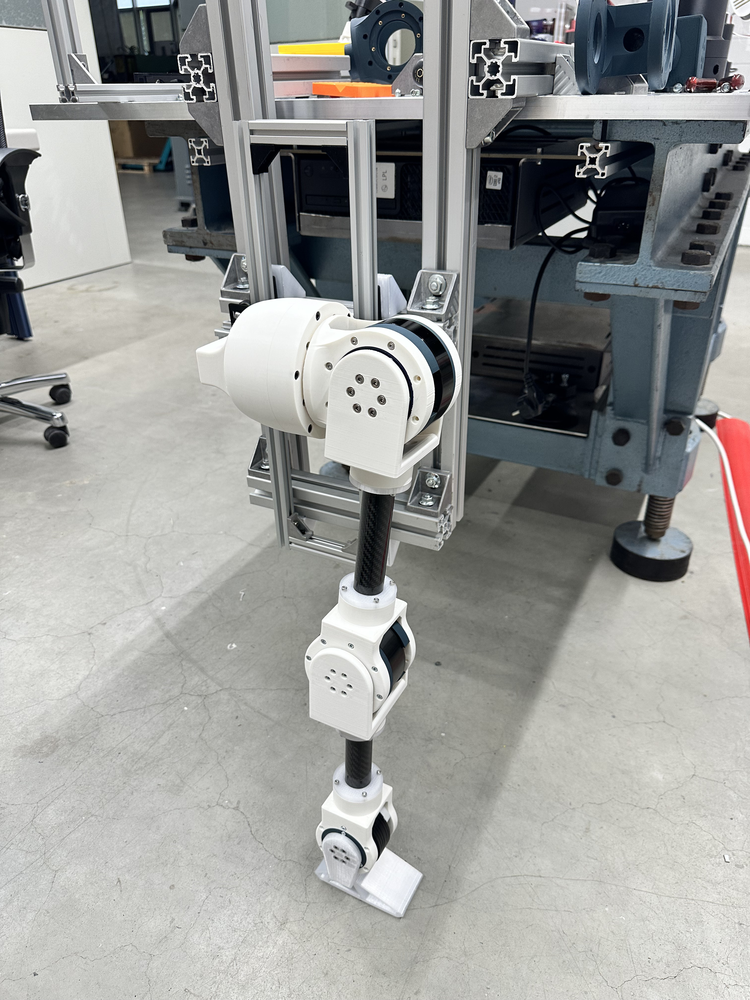
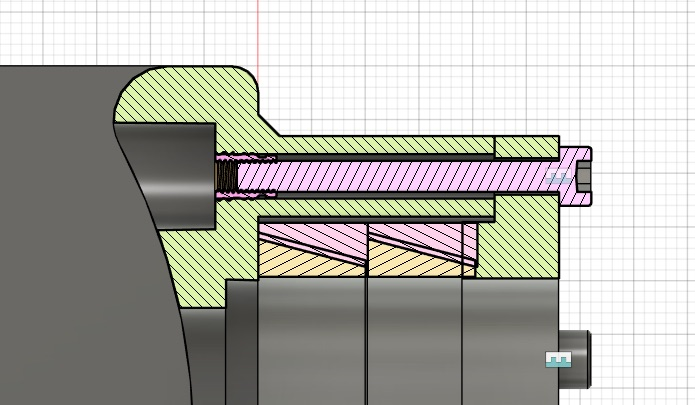

Robotic Leg Module and Actuator Test Bench
Mechanical design of a robotic leg module and test setup. The work focused on actuator mounting, carbon rod integration, secure fixation, cabling considerations, and a connection concept that allowed actuators to be changed easily during testing.

Overview
This project involved the mechanical design of a robotic leg module and its test bench. The setup was intended to support testing and actuator changes, so the design had to be practical to assemble, stiff enough for testing, and accessible for modifications.
Since the project was completed as one of my final tasks in that role, I do not know the later development status of the system. This page therefore focuses on my direct contribution: the mechanical design of the leg, actuator mounting concept, carbon rod connection, cabling considerations, and test bench integration.
My contribution
My work focused on the mechanical design of the robotic leg module and its test setup. A key part of the design was making the actuator and carbon rod connection secure while still allowing actuators to be changed during testing.
- Designed the mechanical structure of the robotic leg module.
- Designed the actuator mounting concept and related mechanical interfaces.
- Worked on secure fixation of the carbon rod without damaging it.
- Designed the test bench interface for mounting and evaluating the leg module.
- Considered cabling and assembly access during the mechanical layout.
- Developed a connection concept that supported actuator changes during testing.
Engineering challenges
Secure carbon rod fixation
- The carbon rod had to be fixed securely while avoiding damage from excessive clamping force.
- The connection needed to transfer loads reliably during testing.
- The design had to allow the actuator-side components to be changed without rebuilding the whole leg.
Actuator and test bench integration
- Actuators needed to be mounted securely and remain accessible for changes.
- The leg had to interface with a test bench for evaluation.
- Cabling and assembly access had to be considered early in the layout.
Carbon rod connector
One of the most interesting details was the carbon rod connection. The requirement was to make actuator changes easy during testing while still fixing the carbon rod securely. The connector used a special press-fit style design to hold the rod in place without breaking it, while keeping the assembly practical to change and service.

What I learned
This project gave me practical experience with carbon rod integration, actuator mounting, press-fit style connection design, cabling considerations, and test bench design for robotic modules.
The main takeaway was that small interface details can become central to whether a robotic prototype is easy to test, modify, and assemble.